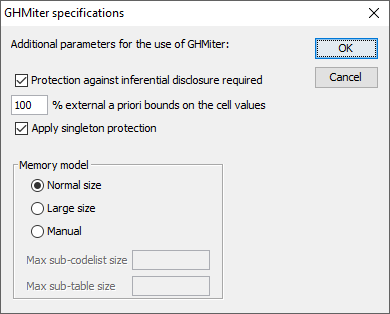
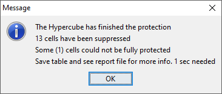
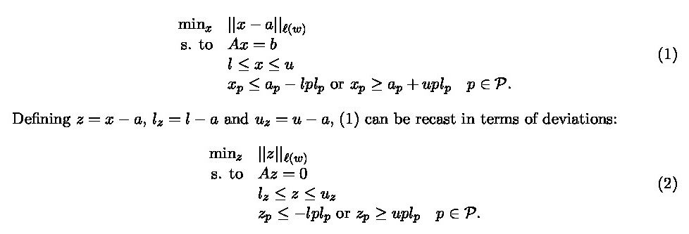
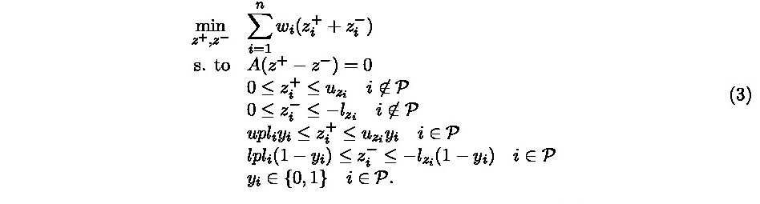

2 Producing Safe Tables
2.1 Introduction
The growing demands from researchers, policy makers and others for more and more detailed statistical information lead to a conflict. Statistical offices collect large amounts of data for statistical purposes. The respondents are only willing to provide the statistical offices with the required information if they can be certain that these statistical offices will treat their data with the utmost care. This implies that respondents' confidentiality must be guaranteed. This imposes limitations on the amount of detail in the publications. Practice and research have generated insights into how to protect tables, but the problem is not yet definitively solved.
Before we go into more details of the basic ideas on which \(\tau\)-Argus is based, we give a sketch of the general ideas. At first sight one might find it difficult to understand that information presented in tabular form presents a disclosure risk. After all, one might say that the information is presented only in aggregate form.
Safe tables are produced from unsafe ones by applying certain SDC measures to the tables. These SDC measures - as far as they are implemented in \(\tau\)-Argus - are discussed in the present section. Some key concepts such as sensitive cells, information loss and the like are discussed as well.
2.2 Sensitive cells in magnitude tables1
The well-known dominance rule is often used to find the sensitive cells in tables, i.e. the cells that cannot be published as they might reveal information on individual respondents. More particularly, this rule states that a cell of a table is unsafe for publication if a few (\(n\)) major (largest) contributors to a cell are responsible for acertain percentage (\(k\)) of the total of that cell. The idea behind this rule is that in that case at least the major contributors themselves can determine with sufficient precision the contributions of the other contributors to that cell. The choice \(n=3\) and \(k=70\)% is not uncommon, but \(\tau\)-Argus will allow the users to specify their own values of \(n\) and \(k\).
As an alternative the prior-posterior rule has been proposed. The basic idea is that a contributor to a cell has a better chance to estimate competitors in a cell than an outsider, and also that these kind of intrusions can occur rather often. The precision with which a competitor can estimate is a measure of the sensitivity of a cell. The worst case is that the second largest contributor will be able to estimate the largest contributor. If this precision is more than \(p\)%, the cell is considered unsafe. An extension is that also the global knowledge about each cell is taken into account. In that case we assume that each intruder has a basic knowledge of the value of each contributor of \(q\)%. Note, that it is actually the ratio \(p/q\) that determines which cells are considered safe, or unsafe. In this version of \(\tau\)-Argus, the \(q\)‑parameter is fixed to \(100\). Literature refers to this rule as (minimum protection of) \(p\)%‑rule. If the intention is to state a prior-posterior rule with parameters \(p_0\) and \(q_0\), where \(q_0 < 100\), choose the parameter \(p\) of the \(p\)%‑rule as \(p = p_0/q_0 \times 100\). See Loeve (2001)2
With these rules as a starting point it is easy to identify the sensitive cells, provided that the tabulation package has the facility not only to calculate the cell totals, but also to calculate the number of contributors and the \(n\) individual contributions of the major contributors. Tabulation packages like ABACUS (from Statistics Netherlands) and the package ‘SuperCross’ developed in Australia by Space-Time Research have that capacity. In fact \(\tau\)-Argus not only stores the sum of the \(n\) major contributions for each cell, but the individual major contributions themselves. The reason for this is that this is very handy in case rows and columns etc. in a table are combined. By merging and sorting the sets of individual contributions of the cells to be combined, one can quickly determine the major contributions of the new cell, without going back to the original file. This implies that one can quickly apply the dominance rule or the \(p\)%-rule to the combined cells. Combining rows and columns (table redesign) is one of the major tools for reducing the number of unsafe cells.
This too is the reason why \(\tau\)-Argus can read microdata files and build the tables itself. However due to continuous demands from users we have now also provide the option to read ready-made tables, but with the restriction that the options for table redesign will not be available in that case.
A problem, however, arises when also the marginals of the table are published. It is no longer enough to just suppress the sensitive cells, as they can be easily recalculated using the marginals. Even if it is not possible to exactly recalculate the suppressed cell, it is possible to calculate an interval that contains the suppressed cell. This is possible if some constraints are known to hold for the cell values in a table. A commonly found constraint is that the cell values are all nonnegative.
If the size of such an interval is rather small, then the suppressed cell can be estimated rather precisely. This is not acceptable either. Therefore it is necessary to suppress additional information to achieve sufficiently large intervals.
Several solutions are available to protect the information of the sensitive cells:
Combining categories of the spanning variables (table redesign). Larger cells tend to protect the information about the individual contributors better.
Suppression of additional (secondary) cells to prevent the recalculation of the sensitive (primary) cells.
The calculation of the optimal set (with respect to the loss of information) of secondary cells is a complex OR-problem. \(\tau\)-Argus has been built around this solution, and takes care of the whole process. A typical \(\tau\)-Argus session will be one in which the users will first be presented with the table containing only the primary unsafe cells. The user can then choose how to protect these cells. This can involve the combining of categories, equivalent to the global recoding of \(\mu\)-Argus. The result will be an update of the table with fewer unsafe cells(certainly not more) if the recoding has worked. At a certain stage the user requests the system to solve the remaining unsafe cells by finding secondary cells to protect the primary cells.
At this stage the user can choose between several options to protect the primary sensitive cells. Either they choose the hypercube method or the optimal solution. In this case they also has to select the solver to be used, Xpress or cplex or the free solver soplex. After this, the table can be stored for further processing if necessary, and eventual publication.
2.3 Sensitive cells in frequency count tables
In the simplest way of using \(\tau\)-Argus, sensitive cells in frequency count tables are defined as those cells that contain a frequency that is below a certain threshold value. This threshold value is to be provided by the data protector. This way of identifying unsafe cells in a table is the one that is implemented in the current version of \(\tau\)-Argus. It should be remarked, however, that this is not always an adequate way to protect a frequency count table3. Yet it is applied a lot. Applying a dominance rule or a \(p\)% rule is useless in this context. One should think about possible disclosure risks that a frequency count table poses and possible disclosure scenarios in order to simulate the behaviour of an intruder. Such an analysis would probably come up with different insights than using a simple thresholding rule, e.g. like the one sketched in the reference just mentioned. We just mention here the risks of group-disclosure; when a(small) group of respondents have all the same score on a certain category. This risk is often also referred to as the problem of \(100\)%-cells. Further research on this topic is being carried out at Statistics Netherlands.
2.4 Table redesign
If a large number of sensitive cells are present in a table, it might be an indication that the spanning variables are too detailed. In that case one could consider combining certain rows and columns in the table. (This might not always be possible because of publication policy.) Otherwise the number of secondary cell suppressions might just be too enormous. The situation is comparable to the case of microdata containing many unsafe combinations. Rather than eliminating them with local suppressions one can remove them by using global recodings. For tabular data we use the phrase “table redesign” to denote an operation analogous to global recoding in microdata sets. The idea of table redesign is to combine rows, columns etc., by adding the cell contents of corresponding cells from the different rows, columns etc. It is a property of the sensitivity rules that a joint cell is safer than any of the individual cells. So as a result of this operation the number of unsafe cells is reduced. One can try to eliminate all unsafe combinations in this way, but that might lead to an unacceptably high information loss. Instead, one could stop at some point, and eliminate the remaining unsafe combinations by using other techniques such as cell suppression.
2.5 Secondary cell suppression
Once the sensitive cells in a table have been identified, possibly following table redesign it might be a good idea to suppress these values. In case no constraints on the possible values in the cells of a table exist this is easy: one simply removes the cell values concerned and the problem is solved. In practice, however, this situation hardly ever occurs. Instead one has constraints on the values in the cells due to the presence of marginals and lower bounds for the cell values (typically 0). The problem then is to find additional cells that should be suppressed in order to protect the sensitive cells. The additional cells should be chosen in such a way that the interval of possible values for each sensitive cell value is sufficiently large. What is “sufficiently large” can be specified by the data protector in \(\tau\)-Argus by specifying the protection intervals.
In general the secondary cell suppression problem turns out to be a hard problem, provided the aim is to retain as much information in the table as possible, which, of course, is a quite natural requirement. The optimisation problems that will then result are quite difficult to solve and require expert knowledge in the area of combinatorial optimisation.
2.6 Information loss in terms of cell costs4
In case of secondary cell suppression it is possible that a data protector might want to differentiate between the candidate cells for secondary suppression. It is possible that they would strongly prefer to preserve the content of certain cells, and are willing to sacrifice the values of other cells instead. A mechanism that can be used to make such a distinction between cells in a table is that of cell costs. In \(\tau\)-Argus it is possible to associate different costs with the cells in a table. The higher the cost the more important the corresponding cell value is considered and the less likely it will be suppressed. We shall interpret this by saying that the cells with the higher associated costs have a higher information content.
The aim of secondary cell suppression can be summarised by saying that a safe table should be produced from an unsafe one, by minimising the information loss, expressed as the sum of the costs associated with the cells that have secondarily been suppressed.
\(\tau\)-Argus offers several ways to compute these costs. The first option is to compute the costs as the sum of the contributions to a cell. Alternatively another variable in the data file can be used as the cost function. Secondly this cost can be the frequency of the contributors to a cell, and finally each cell can have cost \(= 1\), minimising the number of suppressed cells.
2.7 Series of tables
In \(\tau\)-Argus it is possible to specify a series of tables that will be protected one by one, and independently of each other. It is more efficient to choose this option since \(\tau\)-Argus requires only a single run through the microdata in order to produce the tables. But also for the user it is often more attractive to specify a series of tables and let \(\tau\)-Argus protect them in a single session, rather than have several independent sessions.
2.8 The Hypercube/GHMITER method5
In order to ensure tractability also of big applications, \(\tau\)‑argus interfaces with the ghmiter hypercube method of R. D. Repsilber of the Landesamt für Datenverarbeitung und Statistik in Nordrhein-Westfalen/Germany, offering a quick heuristic solution. The method has been described in depth in Repsilber (1994), Repsilber (1999) and Repsilber (2002), for a briefer description see Giessing and Repsilber (2002).
2.8.1 The hypercube method
The approach builds on the fact that a suppressed cell in a simple \(n\)‑dimensional table without substructure cannot be disclosed exactly if that cell is contained in a pattern of suppressed, nonzero cells, forming the corner points of a hypercube.
The algorithm subdivides n-dimensional tables with hierarchical structure into a set of \(n\)-dimensional sub-tables without substructure.These sub-tables are then protected successively in an iterative procedure that starts from the highest level. Successively, for each primary suppression in the current sub-table, all possible hypercubes with this cell as one of the corner points are constructed.
If protection against inferential disclosure is requested, for each hypercube, a lower bound for the width of the suppression interval forthe primary suppression that would result from the suppression of all corner points of the particular hypercube will be estimated. To estimate that bound, it is not necessary to implement the time consuming solution to the corresponding Linear Programming problem. Only if it turns out that the bound is sufficiently large, the hypercube becomes a feasible solution.
If no protection against inferential disclosure is requested, any hypercube will be considered feasible. This may of course lead to somecases of under protection.
For any of the feasible hypercubes, the loss of information associated with the suppression of its corner points is computed. The particular hypercube that leads to minimum information loss is selected, and all its corner points are suppressed.
Note that the information loss concept of the hypercube method is slightly different from the one of the other, linear programming based methods for secondary cell suppression offered by \(\tau\)-Argus it operates rather like a two-stage concept. In the first way, the algorithm will look at the number of additional suppressions (additional to those that are already suppressed because they a primary unsafe, or because they were selected as secondary suppression in another subtable) that would be caused by the selection of a particular candidate hypercube. If there is more than one hypercube that would result in the same, smallest number of additional secondary suppressions, at second priority the method will select the one with the smallest sum of costs associated to the suppression of the corresponding additional secondary suppressions. Cell costs associated to a cell are indeed a logarithmic transformation of the cell value plus eventually a large constant, if the cell is a marginal cell of the current sub-table.
After all sub-tables have been protected once, the procedure is repeated in an iterative fashion. Within this procedure, when cells belonging to more than one sub-table are chosen as secondary suppressions in one of these sub-tables, in further processing they will be treated like sensitive cells in the other sub-tables they belong to. The same iterative approach is used for sets of linked tables.
It should be mentioned here that the ‘hypercube criterion’ is a sufficient but not a necessary criterion for a ‘safe’ suppression pattern. Thus, for particular subtables the ‘best’ suppression patternmay not be a set of hypercubes – in which case, of course, thehypercube method will miss the best solution and lead to some over-protection. Other simplifications of the heuristic approach that add to this tendency for over‑suppression are the following: when assessing the feasibility of a hypercube to protect specific target suppressions against interval disclosure, the method
is not able to consider protection maybe already provided by other cell suppressions (suppressed cells that are not corner points of this hypercube) within the same sub‑table,
does not consider the sensitivity of multi‑contributor primary suppressions properly, that is, it does not consider the protection already provided in advance of cell suppression through aggregation of these contributions,
attempts to provide the same relative ambiguity to (eventually large) secondary suppressions that have been selected to protect cells in a linked sub‑table, as if they were single‑respondent primary suppressions, while actually it would be enough to provide the same absolute ambiguity as required by the corresponding primary suppressions.
2.8.2 The ARGUS implementation of GHMITER
In the implementation offered by argus, ghmiter makes sure that a single respondent cell will never appear to be corner point of one hypercube only, but of two hypercubes at least. Otherwise it could happen that a single respondent, who often can be reasonably assumed to know that he is the only respondent, could use his knowledge on the amount of his own contribution to recalculate the value of any other suppressed corner point of this hypercube.
As explained above, ghmiter uses an elaborate internal cost assignment mechanism which is essential to achieve an optimal performance (given the natural restrictions of the simple heuristic approach, of course). This mechanism should not be cast out of balance. Therefore, the user’s choice of the cell costs (c.f. [3.1.4], [4.4.4]) does not have any impact, when using the hypercube method.
For tables presenting magnitude data, if protection against inferential disclosure is requested (see the upper part of the pop-up window below) \(\tau\)-Argus will ensure that ghmiter selects secondary suppressions that protect the sensitive cells properly. Only cells will be considered feasible as secondary suppressions that are large enough to give enough protection to the target sensitive cell as explained in Giessing (2003).

The standard implementation of the hypercube is that extra protection is given to singleton cells, i.e. cells with only one contributor. As this contributor knows exactly the cell value he might be able to undo the protection. But this extra protecting can be disabled.
In order to achieve this, \(\tau\)-Argus computes a suitable sliding protection ratio (for explanation see Giessing (2003), \(\tau\)-Argus will display the value of this ratio in the report file) to be used by ghmiter. If in the screen above the option “Protection against inferential disclosure required” is inactivated, ghmiter will not check whether secondary suppressions are sufficiently large.
As mentioned above, ghmiter is unable to 'add' the protection given by multiple hypercubes. In certain situations, it is not possible to provide sufficient protection to a particular sensitive cell (or secondary suppression) by suppression of one single hypercube. In such a case, ghmiter is unable to confirm that this cell has been protected properly, according to the specified sliding protection ratio. It will then reduce the sliding protection ratio automatically, and individually, step by step for those cells, the protection of which the program cannot confirm otherwise. In steps \(1\) to \(9\) we divide the original ratio by \(k\), values of \(k\) from \(2\) to \(10\), and if this still does not help, in step 10 we divide by an extremely large value, and finally, if even that does not solve the problem, step 11 will set the ratio to zero). The \(\tau\)-Argus report file will display the number of cases where the sliding protection range was reduced by finally confirmed sliding protection ratio.
Note, that that the number of cases with range reduction reported by this statistic in the report file is very likely to exceed the actual number of cells concerned, because cells belonging to multiple (sub-) tables are counted multiple times. In our experience this concerns particularly the cases, where the protection level was reduced to an‚ ‘infinitely’ small (positive) value (in step 10, see above). Step 10 is usually required to confirm protection of large, high level secondary suppressions, which are likely to appear in multiple tables, especially in processing of linked tables. By the way, terms “reduction of the sliding protection ratio” and “reduction of the protection level” are used synonymously in the report file.
Note that step 11 will make cells eligible for secondary suppression that \(\tau\)-Argus considers as ‘protected’ (so called ‘frozen’ cells, for discussion of this option see for instance Giessing (2003).
As this is inconsistent with the current view on protected cells in \(\tau\)-Argus this will lead to the following error message:

The cell value and the codes of those suppressed frozen cells are then displayed by \(\tau\)-Argus : This information is also written in the file “frozen.txt” in the temp-directory.

When the status of these cells is changed into ‘unprotected’ before re-running the hypercube method, the solution will be a feasible solution for \(\tau\)-Argus. Zero cells are consider to be frozen as well inthe hypercube. Those frozen cells can be ignored.
Negative values
The hypercube method has no problems when certain cells are negative.
2.8.3 References on GHMITER
- Repsilber, R. D. (1994), ‘Preservation of Confidentiality in Aggregated data’, paper presented at the Second International Seminar on Statistical Confidentiality, Luxembourg, 1994
- Repsilber, D. (1999), ‘Das Quaderverfahren’ - in Forum der Bundesstatistik, Band 31/1999: Methoden zur Sicherung der Statistischen Geheimhaltung, (in German)
- Repsilber, D. (2002), ‘Sicherung persönlicher Angaben in Tabellendaten’ - in Statistische Analysen und Studien Nordrhein-Westfalen, Landesamt für Datenverarbeitung und Statistik NRW, Ausgabe 1/2002 (in German)
- Giessing, S. and Repsilber, D. (2002), ‘Tools and Strategies to Protect Multiple Tables with the GHQUAR Cell Suppression Engine’, in ’Inference Control in Statistical Databases’ Domingo-Ferrer (Editor), Springer Lecture Notes in Computer Science Vol. 2316.
- Giessing, S. (2003), ‘Co-ordination of Cell Suppressions: strategies for use of GHMITER’, Proceedings of the Joint ECE/Eurostat work session on statistical data confidentiality (Luxembourg, 7-9 April 2003)
2.9 Optimisation models for secondary cell suppression6
\(\tau\)-Argus applies different approaches to find optimal and near-optimal solutions. One of these approaches is based on a Mathematical Programming technique which consists of solving Integer Linear Programming programs modelling the combinatorial problems under different methodologies (Cell Suppression and Controlled Rounding).The main characteristic of these models is that they share the same structure, thus based only on a \(0\)-\(1\) variable for each cell. In the Cell Suppression methodology, the variable is \(1\) if and only if the cell value must be suppressed. In the Controlled Rounding methodology, the variable is \(1\) if and only if the cell value must be rounded up. Noother variables are necessary, so the number of variables in the model is exactly the number of cells in the table to be protected. In addition, the model also imposes the protection level requirements(upper, lower and sliding) in the same way for the different methodologies (Cell Suppression and Controlled Rounding). These requirements ask for a guarantee that an attacker will not get too narrow an interval of potential values for a sensitive cell, whichhe/she will compute by solving two linear programming programs (calledattacker problems). Even if a first model containing this two-attacker problem would lead to a bi-level programming model, complex to be solved in practice, a Benders' decomposition approach allows us to convert the attacker problems into a set of linear inequalities. This conversion provides a second model for each methodology that can be efficiently solved by a modern cutting-plane approach. Since the variables are 0-1, a branching phase can be necessary, and the whole approach is named "branch-and-cut algorithm".
Branch-and-cut algorithms are modern techniques in Operations Research that provide excellent results when solving larger and complicated combinatorial problems arising in many applied fields (like routing, scheduling, planning, telecomunications, etc.). Shortly, the idea isto solve a compact \(0-1\) model containing a large number of linear inequalities (as the ones above mentioned for the Cell Suppression andfor the Controlled Rounding) through an iterative procedure that does not consider all the inequalities at the same time, but generates the important ones when needed. This dynamic procedure of dealing with large models allows the program to replace the resolution of a hugelarge model by a short sequence of small models, which is termed a "decomposition approach". The on-line generation of the linear inequalities (rows) was also extended in this work to the variables (columns), thus the algorithm can also works on tables with a large number of cells, and the overall algorithm is named "branch-and-cut-and-price" in the Operations Research literature.
To obtain good performance, the implementation has also considered many other ingredients, standard in branch-and-cut-and-price approaches. For example, it is fundamentally the implementation of a pre-processing approach where redundant equations defining the table are eliminated, where variables associated to non-relevant cells are removed, and where dominated protection levels are detected. Thepre-processing is fundamental to make the problem as small as possible before starting the optimization phase. Another fundamental ingredient is the heuristic routine, which allows the algorithm to start with an upper bound of the optimal loss of information. This heuristic routine ensures the production of a protected pattern if the algorithm is interrupted by the user before the end. In other words, thanks to the heuristic routine, the implemented algorithm provide a near-optimal solution if the execution is cancelled before having a proof of optimality. During the implicit enumeration approach (i.e., the branch-and-cut-and-price) the heuristic routine is called several times, thus providing different protected patterns, and the best one will be the optimal solution if its loss of information is equal tothe lower bound. This lower bound is computed by solving a relaxed model, which consists of removing the integrability condition on the integer model. Since the relaxed model is a linear program, a linear programming solver must be called.
We have not implemented our own linear programming solver, but used a commercial solver which is already tested by other programmers for many years. A robust linear programming solver is a guarantee that no numerical trouble will appear during the computation.
That is the reason to requires either cplex (from ILOG) or Xpress(from FICO). Because the model to be solved can be applied to all type of table structures (2-dim, 3-dim, 4-dim, etc), including hierarchical and linked tables, we cannot use special simplex algorithm implementations, like the min-cost flow computation which would required to work with tables that can be modelled as a network (e.g., 2-dimensional tables or collections of 2-dim tables linked by onelink). On this special table, ad-hoc approaches (solving network flowsor short path problems) could be implemented to avoid using general linear programming solvers.
Since \(\tau\)-Argus has been transformed to an open source project we have also included an open source solver Soplex as an alternative for Xpress and cplex. We have obtained a licence that is included in the software that grants to the European National Statistical Institutes a non-exclusive, non-transferable, non-sub-licensable, perpetual right to use Soplex version 2.0.x and SCIP version 3.1.x, linked to the \(\tau\)-Argus software. This enables you to use the \(\tau\)-Argus software withou tbuying a licence for the commercial solvers. However it should benoted that commercial solvers are more powerful and might be needed to solve larger instances.
2.10 The Modular approach7
The modular (HiTaS) solution is a heuristic approach to cell suppression in hierarchical tables. Hierarchical tables are specially linked tables: at least one of the spanning variables exhibits a hierarchical structure, i.e. contains (many) sub-totals.
In Fischetti and Salazar (1998) a theoretical framework is presented that should be able to deal with hierarchical and generally linked tables. In what follows, this will be called the mixed integer approach. In this framework, additional constraints to a linear programming problem are generated. The number of added constraints however, grows rapidly when dealing with hierarchical tables, since many dependencies exist between all possible (sub-)tables containing many (sub-)totals. The implemented heuristic approach (HiTaS) deals with a large set of (sub)-tables in a particular order. A non hierarchical table can be considered to be a hierarchical table with just one level. In that case, the approach reduces to the original mixed integer approach and hence provides the optimal solution. In case of a hierarchical table, the approach will provide a sub-optimal solution that minimises the information loss per sub-table, but not necessarily the global information loss of the complete set of hierarchically linked tables.
In the following section, a short description of the approach is given. For a more detailed description of the method, including some examples, see e.g., De Wolf (2002).
HiTaS deals with cell suppression in hierarchical tables using a top-down approach. The first step is to determine the primary unsafe cells in the base-table consisting of all the cells that appear when crossing the hierarchical spanning variables. This way all cells, whether representing a (sub-)total or not, are checked for primary suppression. Knowing all primary unsafe cells, the secondary cell suppressions have to be found in such a way that each (sub-)table of the base-table is protected and that the different tables cannot be combined to undo the protection of any of the other (sub-)tables. The basic idea behind the top-down approach is to start with the highest levels of the variables and calculate the secondary suppressions for the resulting table. The suppressions in the interior of the protected table is then transported to the corresponding marginal cells of the tables that appear when crossing lower levels of the two variables. All marginal cells, both suppressed and not suppressed, are then’fixed’ in the calculation of the secondary suppressions of that lower level table, i.e., they are not allowed to be (secondarily) suppressed. This procedure is then repeated until the tables that are constructed by crossing the lowest levels of the spanning variables are dealt with.
A suppression pattern at a higher level only introduces restrictions on the marginal cells of lower level tables. Calculating secondary suppressions in the interior while keeping the marginal cells fixed, is then independent between the tables on that lower level, i.e., all these (sub)-tables can be dealt with independently of each other. Moreover, added primary suppressions in the interior of a lower level table are dealt with at that same level: secondary suppressions can only occur in the same interior, since the marginal cells are kept fixed.
However, when several empty cells are apparent in a low level table,it might be the case that no solution can be found if one is restricted to suppress interior cells only. Unfortunately,backtracking is then needed.
Obviously, all possible (sub)tables should be dealt with in a particular order, such that the marginal cells of the table under consideration have been protected as the interior of a previously considered table. To that end, certain groups of tables are formed in a specific way (see De Wolf (2002)). All tables within such a group are dealt separately, using the mixed integer approach. The number of tables within a group is determined by the number of parent-categories the variables have one level up in the hierarchy. A parent-category is defined as a category that has one or more sub-categories. Note that the total number of (sub)-tables that have to be considered thus grows rapidly.
Singletons
Singleton cells should be treated with extra care. The single respondent in this cell could easily undo the protection if no extra measures were taken. The most dangerous situation is that there are only two singletons in a row, or one and one other primary unsafe cell. These singletons could easily disclose the other cell.
We have added options for extra singleton protection in the followingsituations.
If on a row or column of a subtable there are only two singletons and no other primary suppressions.
If there is only one singleton and one multiple primary unsafe cell.
If a frequency rule is used, it could happen that two cells on a row/column are primary unsafe, but the sum of the two cells could still be unsafe. In that case it should be prevented that these two cells protect each other.
Cells within a table sometimes consist of exactly one contributor. Such a cell is called a singleton. Linear sensitivity rules will usually label this cell as (primary) unsafe. When cell suppression is used to protect a table with unsafe cells, these singletons need to be taken care of in a special way.
Within a suppression pattern, contributors in singletons may be able to recalculate other suppressed cells. Obviously, a contributor could always insert its own contribution and thereby recalculate its ownsuppressed cell. This could in turn lead to the possibility of recalculating other suppressed cells in the same suppression pattern. Whenever such a recalculated cell is (primary) unsafe, this means disclosure.
Within the current models used to determine suppression patterns, it is not possible to take all possible situations into account when singletons are part of a suppression pattern. However, an important group of instances of disclosure by singletons, is when a singleton is part of a row with exactly one additional (also primary) suppression.
If on a row or column of a subtable there are only two singletons and no other primary suppressions.
If there is only one singleton and one multiple primary unsafe cell.
If a frequency rule is used, it could happen that two cells on a row/column are primary unsafe, but the sum of the two cells could still be unsafe. In that case it should be prevented that these two cells protect each other.
Note that the last situation is not really a singleton problem, but this problem is handeled in the same way.
To prevent this kind of disclosure, it would be sufficient to force an additional (third) suppression in the same row. In prior versions of \(\tau\)-Argus this was accomplished by increasing the protection levels of one of the (primary) unsafe cells in the row. In short, the protection level of one of the primary suppressed cells was raised in such a way that the other primary suppression would not be able to give sufficient protection. The largest primary unsafe cell in the row got the cell value of the other unsafe cell in the row, plus a small value, as protection level. Indeed, this forces a third suppression inthe row.
However, since the cell value of one of the suppressed cells was involved, this meant that the increased protection level of this cell could become quite large, which would have an effect on the suppression pattern in one of the other dimensions. In certain situations this led to oversuppression.
To circumvent this problem, the newly implemented approach adds a virtual cell to the table. That virtual cell is assigned a value equal to the sum of the two primary suppressed cells in the row, and is given the status '(primary) unsafe'. That virtual cell then only has to be protected against exact disclosure, i.e., it suffices to imposea small protection interval.
The table below shows an example table, displaying the singleton problem. In the first table the values of the cells are given, with inbold, italic the (primary) unsafe cells. The second table shows the names of the cells, where cij stands for the cell with coordinates (i, j).
| Total | X1 | X2 | X3 | X4 | |
|---|---|---|---|---|---|
| Total | 227 | 73 | 33 | 93 | 25 |
| A | 146 | 52 | 15 | 62 | 17 |
| B | 81 | 24 | 18 | 31 | 8 |
| Total | X1 | X2 | X3 | X4 | |
|---|---|---|---|---|---|
| Total | \(c_{00}\) | \(c_{01}\) | \(c_{02}\) | \(c_{03}\) | \(c_{04}\) |
| A | \(c_{10}\) | \(c_{11}\) | \(c_{12}\) | \(c_{13}\) | \(c_{14}\) |
| B | \(c_{20}\) | \(c_{21}\) | \(c_{22}\) | \(c_{23}\) | \(c_{24}\) |
Now assume that cell \(c_{12} = (A,X2)\) is a singleton and cell \(c_{14} = (A,X4)\) is unsafe according to a \(p\)%-rule with \(p=10\). Hence,cell \(c_{14}\) is the only other (primary) unsafe cell in that row. To protect cell \(c_{14}\) against disclosure by the contributor of singleton \(c_{12}\), a virtual cell \(c_{v}\) is defined with value \(32\). Moreover, that virtual cell is given a small protection interval, \((32,33)\) say. The relations that define the table structure, including the virtual cell, are given below:
| \(c_{00} = c_{01} + c_{02} + c_{03} + c_{04}\) |
| \(c_{10} = c_{11} + c_{12} + c_{13} + c_{04}\) |
| \(c_{20} = c_{21} + c_{22} + c_{23} + c_{24}\) |
| \(c_{00} = c_{10} + c_{20}\) |
| \(c_{01} = c_{11} + c_{21}\) |
| \(c_{02} = c_{12} + c_{22}\) |
| \(c_{03} = c_{13} + c_{23}\) |
| \(c_{04} = c_{14} + c_{24}\) |
| \(c_{v} = c_{12} + c_{14}\) |
Within \(\tau\)-Argus, this procedure is implemented in both the optimal approach as well as in the modular approach. For the modular approach, this procedure is applied to each subtable separately, whenever a subtable is dealt with within the modular approach.
This special attention to singletons is only given when the other suppressed cell in the same row is a 'true' primary suppression. This is natural, since it has to be done prior to the search for secondary suppressions. In the modular approach, a hierarchical table is divided into many, non-hierarchical, subtables. Secondary suppressions in one table sometimes temporarily become primary suppressions in other tables during the process. I.e., those suppression are not 'true' primary suppressions. It is therefore also natural not to construct virtual cells in case a singleton is in the same row with exactly one other primary suppression that was originally a secondary suppression. This is indeed the way it is implemented in the modular approach.
In previous versions of \(\tau\)-Argus a similar procedure was available. But then the additional protection was achieved by increasing the protection level of the singleton cell. This would lead however also in additional protection in other dimensions and would create over-protection
Negative values
The implementation by Fischetti and Salazar does not allow for negative values. However it is not uncommon, that some cells in a table have negative values. Therefore additional measures have been taken. If in a subtable during the process negative values are found ,all cell values are increased such that the lowest value becomes positive. Of course the margins have to be recalculated, but a safe protection pattern will be found.
2.10.1 References on the modular method
- Fischetti, M. and J.J. Salazar-González (1998). Models and Algorithmsfor Optimizing Cell Suppression in Tabular Data with LinearConstraints. Technical Paper, University of La Laguna, Tenerife.
- P.P. de Wolf (2002). HiTaS: a heuristic approach to cell suppressionin hierarchical tables. Proceedings of the AMRADS meeting inLuxembourg (2002).
- Additional reading on the optimisation models can be found at theCASC-website(http://research.cbs.nl/casc/Related/99wol-heu-r.pdf)
2.11 The modular approach for linked tables
When tables are linked through simple linear constraints, cell suppressions must obviously be coordinated between tables. The most typical case is when tables share common cells (usually marginals),i.e., when they are linked through constraints saying literally that cell \(X\) of table A is identical to cell \(Y\) of table B.
Suppose a set of \(N\) tables, \(\{T_{1},\dots,T_{N}\}\), need to be protected. These tables are assumed to be linked. Each table has a hierarchical structure that may differ from the hierarchical structures of the other tables. However, it is assumed that tables using the same spanning variables have hierarchies that can becovered. Loosely speaking this means that a single hierarchy can be constructed such that all hierarchies of the same variable in the \(N\) tables are a sub hierarchy of the cover hierarchy. See De Wolf and Giessing (2009) for more details. In the context of pre-planned table production processes which are typically in place in statistical agencies for the production of certain sets of pre-specified standard tabulations, it is normally no problem to satisfy these conditions. Literally speaking, the assumption is that tables in a set of linked tables may present the data in a breakdown by the same spanning variable at various amounts of detail. But only under the condition that, if in one of the tables some categories of a spanning variable are grouped into a certain intermediate sum category, during SDC processing this intermediate sum category is considered in any other table presenting the data in a breakdown of the same spanning variable and at that much detail.
The idea is then as follows. Suppose that the \(N\) tables\(\{T_{1},\dots,T_{N}\}\) that need to be protected simultaneously, contain \(M\) different spanning variables. Since the hierarchies are supposed to be coverable, an \(M\)-dimensional table exists having all the specified tables as subtables. The spanning variables will benumbered 1 up to \(M\).
Each spanning variable can have several hierarchies in the specified tables. Denote those hierarchies for spanning variable \(i\) by \(\mathcal{H}_{1}^{i},\dots,\mathcal{H}_{I_{i}}^{i}\) where \(I_{i}\) is the number of different hierarchies of variable \(i\).
Define the \(M\)-dimensional table by the table with spanning variables according to hierarchies \(G_{1},\dots,G_{M}\) such that, for each \(i = 1,\dots,M\) hierarchy \(G_{i}\) covers the set of hierarchies \(\{\mathcal{H}_{j}^{i}\}\) with \(j = 1,\dots,I_{i}\). This \(M\)-dimensional table will be called the cover table. See De Wolf and Giessing (2009) for more details.
Then use the Modular approach (see Section 2.10) on the cover table \(T_{C}\), but only consider those subtables that are alsosubtables of at least one of the specified tables \(T_{1},\dots,T_{N}\) and disregard the other subtables. I.e., the procedure of the Modular approach is followed, but during that process any simple subtable that is not a subtable of any of thetables in the set \(\{T_{1},\dots,T_{N}\}\) is skipped. I.e., the orderthe simple subtables will be protected, is the same as in the ‘complete’ Modular approach, only some subtables will be skipped.
See De Wolf and Hundepool (2010) for a practical application of the Adjusted Modular Approach.
2.11.1 References on the modular approach for linked tables
- De Wolf, P.P. and S. Giessing (2009), Adjusting the \(\tau\)-Argus modularapproach to deal with linked tables, Data & Knowledge Engineering,Volume 68, Issue 11, pp. 1160-1174.
- De Wolf, P.P. and A. Hundepool (2010), Three ways to deal with a setof linked SBS tables using \(\tau\)-Argus, Privacy in Statistical Databases,J. Domingo-Ferrer and E. Magkos (Eds.), Springer 2010, LNCS 6344 pp.66-74.
2.12 Network solution for large 2 dimensional tables with one hierarchy
\(\tau\)-Argus also contains a solution for the secondary cell suppression based on network flows. This contribution is by Jordi Casto of the Universitat Politècnica de Catalunya in Barcelona. The network flows solution for cell suppression implements a fast heuristic for the protection of statistical data in two-dimensional tables with one hierarchical dimension (1H2D tables). This new heuristic sensibly combines and improves ideas of previous approaches for the secondary cell suppression problem in two-dimensional general, see Castro(1994)and positive tables, see Kelly(1992) and Castro(2003) tables. Details about the heuristic can be found in Castro(1996) and Cox(1995).Unfortunately this approach is only possible for two-dimensional tables with only one hierarchy, due to the limitations of the network flows. Note that the hierarchical variable should be the first variable.
The heuristic is based on the solution of a sequence of shortest-path subproblems that guarantee a feasible pattern of suppressions (i.e.,one that satisfies the protection levels of sensitive cells). Hopefully, this feasible pattern will be close to the optimal one.
The current package is linked with three solvers: CPLEX7.5/8.0 seeILOG(2000) pprn see Castro(1996), and an efficient implementation of the bidirectional Dijkstra’s algorithm for shortest-paths (that will be denoted as “Dijkstra”) see Ahuja(1993). Later releases of cplex will also work if the interface routines are the same than for version 8.0. The heuristic can use any of the three solvers for the solution of the shortest path subproblems, although Dijkstra is recommended (and the default one) for efficiency reasons. cplex is needed if alower bound of the optimal solution want to be computed. The auditing phase can be performed with either cplex or pprn.
pprn and Dijkstra were implemented at the Dept. of Statistics and Operations Research of the Universitat Politècnica de Catalunya, and are included in NF CSP. pprn was originally developed during 1992–1995, but it had to be significantly improved within the CASC project to work with NF CSP. Dijkstra was completely developed in the scope of CASC. The third solver, cplex, is a commercial tool, and requires purchasing a license. However, pprn is a fairly good replacement —although not so robust— for the network flows routines of cplex. Therefore, in principle, there is no need for an external commercial solver, unless lower bounds want to be computed.
Even though two of the three solvers are included in the distribution of NF CSP, this document only describes the features of the heuristic,and from the user’s point of view. A detailed description of pprn and Dijkstra’s solvers can be found in Castro(1996) and Ahuja(1993), respectively.
The current implementation in \(\tau\)-Argus however only uses the Dijkstra and the pprn solvers. We have restricted ourselves from commercial solvers here as the network flows give already a very fast solution.
2.12.1 References on the network solution
- Ahuja, R.K, Magnanti, T.L., Orlin, J.B., Network Flows, Prentice Hall(1993).
- Castro, J., pprn 1.0, User’s Guide, Technical report DR 94/06 Dept. ofStatistics and Op-erations Research, Universitat Politècnica deCatalunya, Barcelona, Spain, 1994.
- Castro, J., Network flows heuristics for complementary cellsuppression: an empirical evaluation and extensions, in LNCS 2316,Inference Control in Statistical Databases, J. Domingo-Ferrer (Ed),(2002) 59–73.
- Castro, J., Nabona, N. An implementation of linear and nonlinearmulticommodity network flows. European Journal of Operational Research92, (1996) 37–53.
- Cox, L.H., Network models for complementary cell suppression. J. Am.Stat. Assoc. 90, (1995) 1453–1462.
- ILOG CPLEX, ILOG CPLEX 7.5 Reference Manual Library, ILOG, (2000).
- Kelly, J.P., Golden, B.L, Assad, A.A., Cell Suppression: disclosureprotection for sensitive tabular data, Networks 22, (1992) 28–55.
- Castro, J. User’s and programmer’s manual of the network flowsheuristics package for cell suppression in 2D tables Technical ReportDR 2003-07, Dept. of Statistics and Operations Research, UniversitatPolitècnica de Catalunya, Barcelona, Spain,2003;
- Seehttp://research.cbs.nl/casc/deliv/41D5-NF-Tau-Argus.pdf
2.13 Controlled Tabular Adjustment8
The purpose of controlled tabular adjustment (also known as minimum-distance controlled tabular adjustment or simply CTA) is to find the closest safe table to the original one. Since CTA is a perturbative method, this goal is achieved by publishing a table where the values of sensitive cells have been modified according to some predefined protection levels, and the remaining non-sensitive cells are minimally changed to guarantee the table additivity.
The example illustrates CTA on a small two-dimensional table with one sensitive cell in bold face, with lower and upper protection levelsequal to five (table (a) of the example). Depending on the 'protection direction' of the sensitive cell, either 'lower' or'upper', which has to be decided, the value to be published for this cell will be respectively less or equal than the original cell value minus the lower protection level, or greater or equal than the original cell value plus the upper protection level. In the example,if the protection direction is 'lower', then the value published orthe sensitive cell should be less or equal than 35; the optimal adjusted table for this case is shown in table (b) of the example. If the protection direction is 'upper', then the value must be great eror equal than 45, as shown in table (c) of the example. In a larger and more complex table, with many sensitive cells, the obtention of the protection directions that provide the minimal changes tonon-sensitives cells is not as easy as in the example. CTA has thus tobe formulated and solved as an optimization problem, in particular as a mixed integer linear problem (MILP).
Example of a CTA solution: The cell (M2P3) is a sensitive cell with lower and upper protection level 5. Protected tables with 'lower protection direction' and 'upper protection direction' (i.e., value of sensitive is respectively reduced and increased byfive units).
| P1 | P2 | P3 | ||
|---|---|---|---|---|
| M1 | 20 | 24 | 28 | 72 |
| M2 | 38 | 38 | 40 | 116 |
| M3 | 40 | 39 | 42 | 121 |
| 98 | 101 | 110 | 309 |
| P1 | P2 | P3 | ||
|---|---|---|---|---|
| M1 | 15 | 24 | 33 | 72 |
| M2 | 43 | 38 | 35 | 116 |
| M3 | 40 | 39 | 42 | 121 |
| 98 | 101 | 110 | 309 |
| P1 | P2 | P3 | ||
|---|---|---|---|---|
| M1 | 25 | 24 | 23 | 72 |
| M2 | 33 | 38 | 45 | 116 |
| M3 | 40 | 39 | 42 | 121 |
| 98 | 101 | 110 | 309 |
CTA was introduced in the manuscript Dandekar and Cox(2002) and, independently and in an extended form, in Castro(2006) (in the latter it was named minimum-distance controlled perturbation method). CTA has shown to have both a small disclosure risk see Castro(2012) and small information loss see Castro and González(2014).
The parameters that define any CTA instance are:
A general table \(a_{i}\), \(i=1,\dots,n\), with \(m\) linear relations \(Aa=b\).
Upper and lower bounds \(u\) and \(l\) for the cell values, assumed to be known by any attacker: \(l \leq a \leq u\).
Vector of nonnegative weights associated to the cell perturbations \(w_{i}\), \(i=1,\dots,n\).
Set \(P \subseteq \{1,\dots,n\}\) of sensitive cells.
Lower and upper protection levels for each primary cell \(lpl_{p}\) and \(upl_{p}\), \(p \in P\)
CTA finds the safe table x closest to \(a\), using some distance \(l{(w)}\)


Problem (3) has \(|P|\) binary variables, \(2n\) continuous variables and \(m + 4|P|\) constraints.The size of (3) is much less than that of the cell suppression problem. For instance, for a table of \(8,000\) cells, \(800\) primaries, and \(4,000\) linear relations, CTA formulates a MILP of 800 binary variables, \(16,000\) continuous variables and \(7,200\) constraints (these figures would be \(8,000\), \(12,800,000\) and \(32,000,000\) for cell suppression).
The benefits of CTA are not limited to a smaller size of the resulting MILP problem. CTA can be easily extended with constraints to meet some data quality criteria see Cox et al (2005). It has also been experimentally observed that the information loss of CTA solutions iscomparable (in some instances even better) to that of cell suppression see Castro and Giessing(2006).
2.13.1 References on the controlled tabular adjustment solution
- L.H. Cox, J.P. Kelly and R. Patil (2005), Computational aspects ofcontrolled tabular adjustment: algorithm and analysis. B. Golden, S.Raghavan, E. Wassil, eds. The Next wave in Computer,Optimization and Decision Technologies, Kluwer, Boston, MA,45–59.
- J. Castro, Minimum-distance controlled perturbation methods forlarge-scale tabular data protection, European Journal ofOperational Research, 171 (2006) 39–52.
- J. Castro (2012), On assessing the disclosure risk of controlledadjustment methods for statistical tabular data, InternationalJournal of Uncertainty, Fuzziness and Knowledge-Based Systems, 20921–941.
- J. Castro and S. Giessing (2006), Testing variants of minimumdistance controlled tabular adjustment, in Monographs of OfficialStatistics. Work session on Statistical Data Confidentiality,Eurostat-Office for Official Publications of the European Communities,Luxembourg, 2006, 333–343. ISBN 92-79-01108-1.
- J. Castro and J.A. González (2014), Assessing the information lossof controlled tabular adjustment in two-way tables, Lecture Notesin Computer Science, 8744, 11–23.
- R.A. Dandekar and L.H. Cox (2002), Synthetic tabular data: Analternative to complementary cell suppression, manuscript, EnergyInformation Administration, US Department of. Energy.
2.14 Controlled rounding9
Controlled rounding is a rounding procedure that, differently from other rounding methods, yields additive rounded tables. That is to say that the rounded values add up to the rounded totals and sub-totals shown in the table. This property not only permits the release of realistic tables but also makes it impossible to reduce the protection by “unpicking” the original values by exploiting the differences in the sums of the rounded values. The Controlled Rounding Procedure (CRP) implemented in \(\tau\)-Argus also allows the specification hierarchical tables.
Controlled rounding is a SDC method that is most effective for frequency tables. In fact, this method gives adequate protection to small frequencies by creating uncertainty also with respect to zero values (i.e. empty cells). The same cannot be said for suppression in the way it is implemented now in \(\tau\)-Argus.
2.14.1 Restricted and non-restricted controlled rounding
In Zero-restricted Controlled Rounding the rounded values are chosen leaving unaltered the original values that are already multiples of the rounding base, while rounding the others to one of the adjacent multiples of this base. The modified values are chosen so that the sum of the absolute differences between the original values and the rounded ones is minimized under the additivity constraint. Therefore, some values will be rounded up or down to the most distant multiple of the base in order to satisfy the constraints. In most cases such a solution can be found but in some cases it cannot. The zero-restriction constraint in CRP can be relaxed allowing the values to be rounded to a non adjacent multiple of the base. This relaxation is controlled by allowing a maximum number of steps. For example, consider rounding the value \(7\) when the base equals \(5\). In zero-restricted rounding, the solution can be either \(5\) or \(10\). If \(1\) step is allowed, the solution can be \(0, 5, 10\) or \(15\). In general, let \(z\) be the integer to be rounded in base \(b\), then this number can bewritten as \[{z = {\mathit{ub} + r}},\]
where \(ub\) is the lower adjacent multiple of \(b\) (hence \(u\) is the floor value of \(z/b\)) and \(r\) is the remainder. In the zero-restricted solution the rounded value, \(a\), can take values: \[\left\{ \begin{matrix}{{a = \mathit{ub}}\mathit{if}{r = 0};} \\{{a = \left\{ \begin{matrix}\mathit{ub} \\{{({u + 1})}b}\end{matrix} \right.}\mathit{if}{r \neq 0.}}\end{matrix} \right.\]
If \(K\) steps are allowed, then \(a\), can take values:
\[\left\{ \begin{matrix}{{a = \mathit{\max}}{\{{0,{({u + j})}}\}}b,{j = {- K}},\ldots,K,\mathit{if}{r = 0};} \\{{a = \mathit{\max}}{\{{o,{({u + j})}}\}}b,{j = {- K}},\ldots,{({K + 1})},\mathit{if}{r \neq 0.}}\end{matrix} \right.\]
2.14.2 Optimal, first feasible and RAPID solutions10
For a given table there could exist more than one controlled rounded solutions; any of these solutions is a feasible solution. The Controlled Rounding Program embedded in \(\tau\)-Argus determines the optimal solution by minimising the sum of the absolute distances of the rounded values from the original ones. Denoting the cell values, including the totals and sub-totals, with \(z_{i}\) and the correspondingrounded values with \(a\)i, the function that is minimised is \[{\sum\limits_{i = 1}^{N}{\mid {z_{i} - a_{i}} \mid}},\]
where \(N\) is the number of cells in a table (including the marginalones). The optimisation procedure for controlled rounding is a rather complex one (NP-complete program), so finding the optimal solution may take a long time for large tables. In fact, the algorithm iteratively builds different rounded tables until it finds the optimal solution. In order to limit the time required to obtain a solution,the algorithm can be stopped when the first feasible solution is found. In many cases, this solution is quite close to the optimal one and it can be found in significantly less time.
The RAPID solution is produced by CRP as an approximated solution when not even a feasible one can be found. This solution is obtained by rounding the internal cells to the closest multiple of the base and then computing the marginal cells by addition. This means that the computed marginal values can be many jumps away from the original value. However, a RAPID solution is produced at each iteration of the search for an optimal one and it will improve (in terms of the loss function) over time. \(\tau\)-Argus allows to stop CRP after the first RAPID is produced, but this solution is likely to be very far away from the optimal one.
2.14.3 Protection provided by controlled rounding
The protection provided by controlled rounding can be assessed by considering the uncertainty about the disclosive true values achieved releasing rounded values; that is the existence interval that an intruder can compute for the rounded value. We assume that also the values of the rounding base, \(b\), and the number of steps allowed, \(K\), are released together with the rounded table. Furthermore, we assume that it is known that the original values are frequencies (hence nonnegative integers).
2.14.3.1 Zero-restricted rounding
Given a rounded value, \(a\), an intruder can compute the following existence intervals for the true value, \(z\): \[\begin{matrix}{{z \in {\lbrack{0,{b - 1}}\rbrack}}\mathit{if}{a = 0}} \\{{z \in {\lbrack{{{a - b} + 1,}{{a + b} - 1}}\rbrack}}\mathit{if}{a \neq 0.}}\end{matrix}\]
For example, if the rounding base is \(b=5\) and the rounded value is \(a=0\), a user can determine that the original value is between \(0\) and \(4\). If the rounded value is not \(0\), then users can determine that thetrue value is between plus or minus 4 units from the published value.
2.14.3.2 K-step rounding
As mentioned before, it is assumed that the number of steps allowed is released together with the rounded table. Let \(K\) be the number of steps allowed, then an intruder can compute the following existence intervals for the true value \(z\): \[\begin{matrix}{{z \in {\lbrack{0,{({K + 1})}{b - 1}}\rbrack}}\mathit{if}{a < {({K + 1})}}b} \\{{z \in {\lbrack{{a - {({K + 1})}}{b + 1,}{a + {({K + 1})}}{b - 1}}\rbrack}}\mathit{if}{a \geq {({K + 1})}}\mathit{b.}}\end{matrix}\]
For example, assume that for controlled rounding with \(b=5\) and \(K=1\), \(a=15\), then a user can determine that \[{z \in {\lbrack{6,24}\rbrack}}.\]
2.14.4 Choosing the parameters for Controlled Rounding
The parameters that can be chosen for rounding are the rounding base, \(b\), and the number of steps allowed. If their value is released,users (including potential intruders) will be able to compute existence intervals for the true values according to the formulae given above. Then, the choice of the parameters’ values depends on the protection required for the disclosive values. Of course, the larger the existence interval the greater the protection but also the damage caused to the data. The choice of the rounding base, then, should be made by the data protector considering the protection requirements and the damage caused to the data. A discussion on how existence intervals can be related to protection requirements can be found, for example, in Willenborg and de Waal (2001). Below we give some general considerations on the effect of different choices of the rounding base.
Frequencies are disclosive if their values are not larger than a chosen threshold, say \(f\). In \(\tau\)-Argus the minimal rounding base is \(b=f\). When this value is chosen, disclosive values can be rounded either to \(0\) or to \(b\). Hence, an intruder would know that all published zeros are disclosive values, while he or she could not determine if a published value equal to \(b\) is a disclosive value or a larger, safe, one. In some cases this protection can be considered insufficient because it is required that the existence interval for values rounded to zero contains at least one safe value. Then the value of \(b\) must be chosen to be greater than \(f\) or the number of steps allowed must be greater than zero. It must be stressed, however, that the larger the base and the greater the damage inflicted to the data (including safe values). In some cases, data protector may be happy with a base that is less than the minimum frequency threshold. For example, it could be decided that the width of the existence interval must be not less than the minimum frequency. In this case, the base should be chosen to be the minimal integer not smaller than \(f/2\). Using a smaller base than the minimum safe frequency can be achieved in \(\tau\)-Argus by lowering the threshold before computing the table. This “trick” is allowed in rounding because the procedure does not change if the disclosive cells are changed (unlike secondary suppression).
2.15 Audit
When a table is protected by cell suppression, by making use of the linear relation between published and suppressed cell values in atable (including its margins), it is always possible for any particular suppressed cell of a table to derive upper and lower bounds for its true value. This holds for either tables with non-negative values, and those tables containing negative values as well, when itis assumed that instead of zero, some other (possibly tight) lower bound for any cell is available to data users in advance of publication. The interval given by these bounds is called the ‘feasibility interval’. The example below illustrates the computation of the feasibility interval in the case of a simple two-dimensional table where all cells may only assume non-negative values:
| 1 | 2 | Total | |
|---|---|---|---|
| 1 | \(X_{11}\) | \(X_{12}\) | 7 |
| 2 | \(X_{21}\) | \(X_{22}\) | 3 |
| 3 | 3 | 3 | 6 |
| Total | 9 | 7 | 16 |
For this table the following linear relations hold: \[\begin{matrix}{{{X_{11} + X_{12}} = 7}{(\mathit{R1})}} \\{{{X_{21} + X_{22}} = 3}{(\mathit{R2})}} \\{{{X_{11} + X_{21}} = 6}{(\mathit{C1})}} \\{{{X_{12} + X_{22}} = 4}{(\mathit{C2})}} \\ \text{with }{X_{\mathit{ij}} \geq 0}, \forall (i,j) \end{matrix}\]
Using linear programming methodology, it is possible to derive systematically for any suppressed cell in a table a upperbound \((X^{\mathit{\max}})\) and a lower bound \((X_{11}^{\mathit{\min}})\) for the set of feasible values. In the example above, for cell (1,1) these bounds are \((X_{11}^{\mathit{\min}}) = 3\) and \((X_{11}^{\mathit{\max}}) = 6\).
A general mathematical statement for the linear programming problem to compute upper and lower bounds for the suppressed entries of a table is given in Fischetti and Salazar (2000)11.
Note that in the current implementation the \(\tau\)-Argus audit routine computes upper and lower bounds (i.e. the feasibility intervals) for the suppressed entries of a hierarchical table considering the full set of table relations – even, if the table is a hierarchical table.After obtaining these feasibility intervals, they are compared to the protection intervals (c.f. subsection on protection levels in section 4.3.2. Protection level of the SDC-Handbook, Hundepool et al(2012)) and the result of this comparison will be reported to the user. When a table has been protected properly, the feasibility interval of each primary sensitive cell should cover the protection interval. These intervals will be shown by \(\tau\)-Argus.
2.15.1 Auditing a hierarchical table
It should be noted that secondary cell suppression algorithms like Modular and Hypercube relying on a backtracking procedure (c.f. the subsection on linked and hierarchical tables in section 4.4.4.Secondary cell suppression in hierarchical and linked tables of theSDC-Handbook, Hundepool et all(2012)) assign secondary suppressions considering only a part of the table relations at a time, e.g. those referring to the ‘current’ subtable. These methods are able to protect each subtable properly in the sense that the feasibility intervals of the sensitive cells indeed cover the protection intervals. But this holds only, if the feasibility intervals are computed considering only the table relations of the particular subtable. But for a hierarchical table, feasibility intervals computed on basis of the set of relations for the full table normally tend to be closer than those computed on basis of separate sets of relations corresponding to individual sub-tables. Hence, in a hierarchical table, it is not unlikely that the Audit routine discovers that some cells were not protected properly.
2.15.2 Discovering singleton problems
Making use of the additional knowledge of a respondent, who is the single respondent to a cell (a so called ‘singleton’), it is possible to derive intervals that are much closer than without this knowledge. The audit routine could be used to identify problems in this respect in the following way: in advance of running the audit routine, set the status of a particular singleton cell from “unsafe” to “safe”.
2.16 Functional design of \(\tau\)-Argus
See section 4.2 Disclosure risk assessment I: primary sensitive cells of the SDC-Handbook (Hundepool et al. (2012)).↩︎
Loeve, Anneke, 2001, Notes on sensitivity measures and protection levels, Research paper, Statistics Netherlands. Available at http://neon.vb.cbs.nl/casc/related/marges.pdf ↩︎
See section 5.2 Disclosure risks of the SDC-Handbook (Hundepool et al. (2012)).↩︎
See section 4.6 Information loss measures for tabular data of the SDC-Handbook (Hundepool et al. (2012)).↩︎
The section on GHMiter has been contributed by Sarah Giessing, Federal Statistical Office of Germany 65180 Wiesbaden; E-mail: sarah.giessing@destatis.de.↩︎
The optimisation models have been built by a team of researchers headed by Juan-José Salazar-Gonzalez of the University La Laguna, Tenerife, Spain. Other members of the team were: G Andreatta, M. Fischetti, R. Betancort Villalva, M.D. Montesdeoca Sanchez and M. Schoch.↩︎
See section 4.4.4 Secondary cell suppression in hierarchical and linked tables of the SDC Handbook Hundepool et al. (2012).↩︎
See section 4.5.2 A post-tabular method: Controlled tabular adjustment of the SDC Handbook Hundepool et al. (2012).↩︎
See section 5.4.3 Rounding of the SDC Handbook Hundepool et al. (2012).↩︎
For further details see Salazar, Staggermeier and Bycroft (2005 Controlled rounding implementation, UN-ECE Worksession on SDC, Geneva)↩︎
Fischetti, M., Salazar Gonzales, J.J. (2000), Models and Algorithms for Optimizing Cell Suppression Problem in Tabular Data with Linear COnstraints, in Journal of the American Statistical Association, Vol. 95, pp.916↩︎